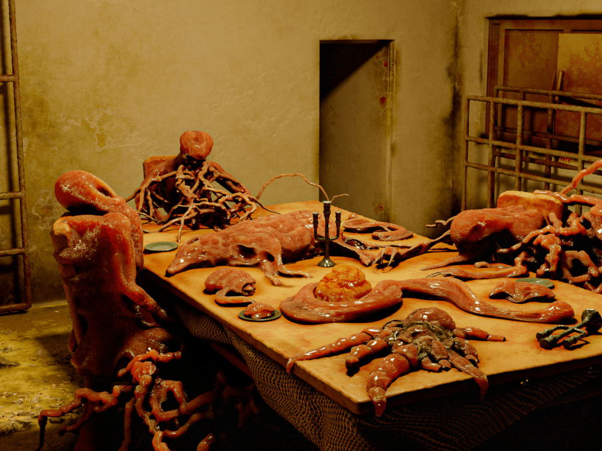

SCP-610 infected individuals and a converted environment. Visible are an animate infected, an inanimate infected, a nonhuman infected, and several unknown infected.
Item #: SCP-610
Object Class: Keter
Special Containment Procedures: Due to the vast area of 'infection' SCP-610 covers, containment is impossible. Isolation of the area has proved far more effective and permission has been granted by the Russian government to establish a perimeter to keep people out of these areas under the guise of military operations.
Should any organism displaying traits consistent with SCP-610 be sighted near this perimeter then the established protocol requires it be engaged at range with small arms until immobile then dispatched using incendiary weapons and munitions from as great a distance as possible. Any living thing coming in physical contact with an organism infected with SCP-610 is considered expendable and is to be immediately terminated and incinerated. Any persons coming within three meters of SCP-610 infected life are to immediately withdraw from the area, be isolated from the rest of their team, and subjected to medical examination using only remote techniques to determine if infection has occurred and appropriate steps taken based on that determination.
At present the known infection vectors for SCP-610's spread seem to be focused on physical contact. Drone movements within heavily infected areas have returned air samples containing minute particulate which when exposed to organic compounds will result in the spread of SCP-610. The results of these particular tests have revealed that most require several days to manifest if at all, with the exception of direct contact with exposed lung and liver tissue. These particular tests show a rapid rate of growth which requires incineration of the testing environment no more than twenty-four hours after initial exposure, with even a two-hour mishap risking a compromised facility event. Given that this kind of rapid growth only occurs in organic material existing outside the human body, this form of infection is currently considered a minor concern.
These peculiarities have given rise to a series of questions regarding the possible origin of the infection in conjunction with the failed [DATA EXPUNGED]. Containment protocol remains at a scorched earth policy at this time and no concern for transmission via water or air at infection parameters exists barring situational changes in the field.
Description: Initial reports of SCP-610 came direct from the Russian government through undisclosable channels. These reports consisted primarily of disappearances of farmers in the region and were not considered until the local police, followed by the regional police, and finally a government dispatched agent all failed to report in within a 72 hour period. A small military contingent was dispatched to the area and quickly withdrew at which point The Foundation was contacted to investigate.
The area SCP-610 affects is close to Lake Baikal in Southern Siberia. Areas of known infection are marked on a map provided to us here. Containment perimeters are marked in blue surrounding these infection areas and as of present no further locations have been identified. Incursions into the perimeter must be reported prior to conducting, confirmed during exploration, and debriefed on immediately following return.
{kind=link}
SCP-610 appears to be a contagious skin disease at first with symptoms including rash, itching, and increased skin sensitivity. Within 3 hours the disease will cause blemishes resembling heavy scar tissue to form in the chest and arm areas, spreading to the legs and back within an additional hour, consuming the victim completely within five hours. Exposure to higher temperatures vastly decreases the time for the contagion to spread and complete infections have been recorded occurring in as little as five minutes.
After the completion of the infection occurs the victim's life functions will cease for approximately 3 minutes after which time they will restart at 2-3 times the activity rate of a normal human. Following this, the scar tissue on the victims will start to move of its own accord and grow at a rapid rate. Normal human features start to disappear at this point under the infection and the path of mutation appears to be largely random. Subjects observed in this stage of infection have been recorded as growing three or more limbs of a type such as arms or legs, the head may become misshapen and elongate or widen out, and parts of the subject may split open from which additional branches of flesh will grow. The duration of this stage of infection is unknown and not all subjects appear to progress to the later stages.
Under unknown conditions an infected individual will cease moving and place itself in a location it deems suitable where it roots itself. The fleshy growth on the victim will then begin to spread itself across all surrounding objects and consume them. Such objects do not spread the infection as living creatures do, however, and the effect of prolonged contact with these objects is recorded later in this document. It is assumed that this behavior is to create an area hospitable to continued growth of the other infected.
Observation of life infected by SCP-610 by staff is impossible. Those infected with the disease immediately seek out aid as natural human impulse resulting in unintended infections. Those infected past the scar tissue phase actively and aggressively attempt to infect anyone approaching them within an undefined area. It has been established that should an infected be capable of sight and observe an uninfected, it will proceed toward them. If the infected has lost the ability of sight, a range of approximately 30 meters is considered safe.
Observation of SCP-610 infected settlements has been established using artificial methods such as remote robots. The data returned from these observations coupled with the openly aggressive nature of the infected to attempt to spread SCP-610 has resulted in the Keter classification, however so long as nothing is allowed to enter or leave the infected areas it is considered a neutralized threat. Of concern are the cavernous areas beneath the infected settlements that were discovered during the exploration and attempts to get research personnel into these areas are underway.
Field Logs:
SCP-610-L1 - A small remote controlled rover is sent to Site A to locate missing personnel.
SCP-610-L2 - An infected Class-D personnel is sent into Site C with video equipment.
SCP-610-L3 - Initial discovery of the tunnel entrances at Site A.
SCP-610-L4 - Unmanned exploration of the Site A tunnels.
SCP-610-L5 - Manned exploration of the Site A tunnels.
The following field report is for Class-A or higher personnel only. Unauthorized viewing of this file is strictly prohibited and will be considered a violation of Foundation contracts and a breach of international law.
SCP-610-L6 - Exploration records of Operation 'Source Point'.